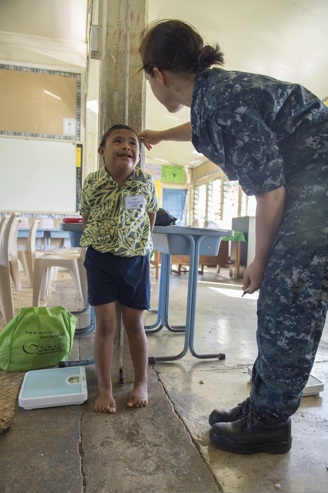

Manu, 5 anos, encaminhada "porque estava baixinha". Peso 15,5 kg (P15); estatura 99 cm, abaixo do P3. Eutrófica, sem broto mamário. Mãe 1,50 m, pai 1,61 m. Idade óssea compatível com 5 anos.
Manu: a menina que veio "porque estava baixinha"
A menina e os números
Manu é uma menina de 5 anos, encaminhada ao laboratório de endócrino-pediatria com uma queixa simples e direta: "estava baixinha". Os números atuais: peso 15,5 kg (percentil 15) e estatura 99 cm, abaixo do percentil 3. Há também a medida anterior — aos 4 anos e meio ela tinha 14,5 kg e 95,5 cm. Guarde essas duas estaturas (95,5 cm e 99 cm) e as duas idades (4,5 e 5 anos): elas vão fechar a etiologia mais à frente, quando calcularmos o quanto ela cresceu por ano. A mãe, Marina Maria, conta que Manu sempre foi uma criança saudável, sem nenhuma alteração que chamasse atenção.
O exame que não acende alarme
Ao exame físico, Manu é eutrófica — peso adequado para o tamanho dela, sem magreza nem obesidade. Não há broto mamário; a pelugem pubiana é fina, clara e esparsa — ou seja, sem sinais de início de puberdade, o que é esperado para a idade. Em resumo: uma menina de 5 anos clinicamente bem, sem estigmas, sem desnutrição, sem nada de "doente" no exame. O único dado que destoa é a estatura. Isso já adianta um caminho — quando o exame é limpo e a história é de criança saudável, a baixa estatura tende a não ser a ponta de uma doença sistêmica óbvia.
Os pais, também baixos
Um dado de ouro da anamnese: a estatura dos pais. A mãe (Marina Maria) tem 1,50 m; o pai, 1,61 m. Ambos baixos. Esse detalhe não é decorativo — é a matéria-prima do alvo genético, a estatura que os pais "programaram" para a filha. Some-se a isso a idade óssea da Manu, compatível com 5 anos (igual à idade cronológica). São duas pistas que, mais à frente, vão apontar exatamente para um diagnóstico — mas ainda é cedo para nomeá-lo.
Clique, toque ou Tab + Enter; cada dado revela seu papel no raciocínio.
Por onde o raciocínio começa
De todos os dados, o que mais chama atenção é a estatura abaixo do P3. É por ali que o raciocínio começa: primeiro confirmar e nomear o problema (o diagnóstico sindrômico), depois caçar a etiologia específica. Guarde Manu inteira — os 99 cm abaixo do P3, a eutrofia, a ausência de puberdade, os pais baixos, a idade óssea compatível. Cada um desses achados vai ganhar peso quando aplicarmos as ferramentas de avaliação. No fim, voltamos para responder as duas perguntas que o caso dela cobra: qual o diagnóstico sindrômico e qual a etiologia.

Quiz fixação
Ancoragem do raciocínio: o dado que dispara a investigação.
-
Diante de Manu — 5 anos, 99 cm (abaixo do P3), eutrófica, sem puberdade, pais baixos e idade óssea compatível com a idade —, qual dado deve ancorar o início do raciocínio diagnóstico?
Por que cada alternativa:
- A) Descreve normalidade, não o problema: a eutrofia é tranquilizadora (afasta desnutrição como causa óbvia), mas não é o achado que motiva a investigação — é justamente o que torna a baixa estatura "isolada". Cai-se ao confundir "dado que organiza a conduta" com "dado mais reconfortante".
- B) Certa. A baixa estatura é um diagnóstico que parte da estatura: o achado que define o problema e dispara toda a investigação é estar abaixo do P3. Os demais dados entram depois, para classificar o tipo — mas o ponto de partida é a estatura.
- C) É achado esperado para a idade: aos 5 anos a ausência de puberdade é o normal — não acende alarme nem ancora raciocínio. Cai-se ao superdimensionar um achado fisiológico da idade como se fosse pista.
- D) É uma ferramenta, não o ponto de partida: a idade óssea entra para diferenciar variantes mais adiante; sozinha, no início, não define que há um problema a investigar. Cai-se ao antecipar uma ferramenta de etapa avançada para o lugar do gatilho inicial.
-
Por que a estatura dos pais (mãe 1,50 m; pai 1,61 m) é um dado relevante na avaliação da Manu?
Por que cada alternativa:
- A) Crava o diagnóstico cedo demais: pais baixos sugerem familiar, mas o diagnóstico exige também velocidade normal e idade óssea compatível — uma peça só não fecha. Cai-se ao saltar da pista para a conclusão sem as outras ferramentas.
- B) Certa. A estatura dos pais alimenta o alvo genético (a média corrigida das alturas), que estima até onde a criança pode chegar. Pais baixos → alvo baixo → uma das peças (não a única) que apontará a baixa estatura familiar.
- C) Inverte o sentido do dado: pais baixos apontam para a variante fisiológica (familiar), não para doença genética — esta se suspeita por fenótipo alterado, não por pais baixos. Cai-se ao associar "genético" (herança normal de baixa estatura) a "doença genética".
- D) Descarta uma ferramenta essencial: o alvo genético e a velocidade de crescimento são ferramentas distintas e complementares — uma não substitui a outra. Cai-se ao tratar as quatro ferramentas como intercambiáveis.